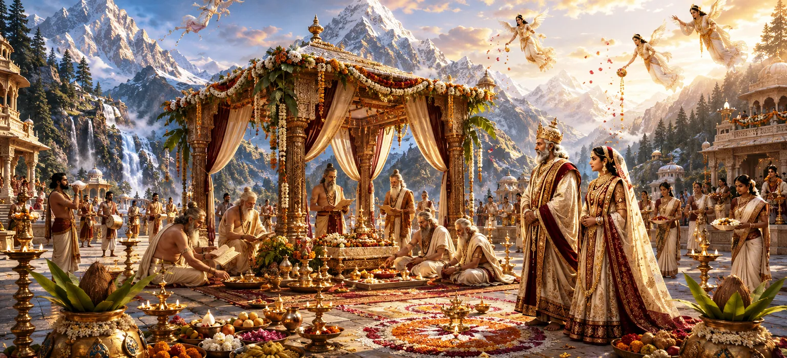

After the betrothal of Lord Shiva and Goddess Pārvatī was joyfully accepted, preparations for the divine wedding began throughout the heavens and the earthly realms. Gods, sages, and celestial beings eagerly participated in arrangements for the sacred union that would bring harmony, prosperity, and spiritual blessings to all creation.
News of the approaching wedding spread quickly throughout the three worlds. Devas, sages, gandharvas, and celestial maidens rejoiced, knowing that the union of Shiva and Shakti would benefit all beings.
King Himālaya ordered magnificent arrangements for the wedding. Palaces were decorated, sacred halls were prepared, and every effort was made to ensure that the ceremony would be worthy of the divine bride and bridegroom.
Great sages offered prayers and blessings for the successful completion of the wedding. Their sacred chants filled the atmosphere with purity and spiritual power.
Divine flowers, fragrant garlands, and auspicious ornaments were gathered from heavenly gardens. The beauty of the decorations reflected the sacred significance of the coming event.
The gods eagerly discussed the forthcoming wedding. They recognized that this sacred union would eventually lead to the birth of the divine commander destined to defeat Tārakāsura.
As preparations advanced, anticipation grew among all assembled beings. Every heart was filled with devotion and joy as the auspicious day drew near.
Great events require devotion, effort, and reverence.
The gods and sages united for a divine purpose.
Faithful hearts rejoice before the arrival of divine blessings.
The preparations demonstrated the unity of heavenly and earthly realms. Kings, sages, gods, and celestial beings all participated in honoring the sacred marriage, creating an atmosphere of universal harmony.
Before receiving a great blessing, preparation is essential. Just as the worlds prepared for the marriage of Shiva and Pārvatī, we too should prepare our minds and hearts through devotion, discipline, and purity.
As the wedding day approached, auspicious signs appeared throughout nature. Gentle breezes blew, flowers blossomed abundantly, and the atmosphere became filled with joy and serenity.
With preparations nearly complete, attention turned toward Kailāsa. The celestial beings prepared to assemble there, eager to witness the greatest wedding celebration in the universe.
"Preparation performed with devotion transforms an event into a sacred celebration."
The arrangements for the divine wedding have now been completed with great devotion and joy. The heavens and the earth stand ready to witness the sacred union of Shiva and Pārvatī. Continue to the next chapter to see the gods, sages, and celestial beings gather at Mount Kailāsa in anticipation of the grand celebration.